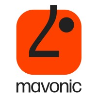

Akshay Mhaskar
DevOps Engineer
Mumbai, Maharashtra, India | mhaskarakshay1992@gmail.com | +91 8898910723 |


Summary
Experienced DevOps Engineer with expertise in AWS & GCP, Linux administration, IT administration, and networking. Proven track record of optimizing cloud infrastructure for performance, cost, and security. Strong in automation, CI/CD pipelines, and troubleshooting. Collaborative team player always seeking to learn and improve skills. Open to new opportunities.
Technical Expertise
Skill Proficiency: ★☆☆☆☆ Beginner | ★★☆☆☆ Elementary | ★★★☆☆ Intermediate | ★★★★☆ Advanced | ★★★★★ Expert
Cloud & Infrastructure
- AWS
- GCP
- Azure
- Terraform
- Terragrunt
- Crossplane
- Vagrant
Containerization
- Docker
- Kubernetes (GKE, EKS)
- Helm, containerd
- containerd
- Keda
- Karpenter
Networking & Security
- Istio
- Linkerd
- Emissary Ingress
- NGINX Ingress
- KrakenD
- Trivy
- Terrascan
CI/CD & Monitoring
- Jenkins
- ArgoCD
- GitLab
- Cloud Build
- GitHub Actions
- Prometheus, Grafana, Datadog
Databases & Messaging
- RabbitMQ
- Elasticsearch
- Redis
Other Skills
- Windows
- Linux
- Python
- Bash
- KubeGreen
- Git
Featured Projects
Stashfin Cloud Migration
Current Ongoing Project | Collaboration with Searce
- Leading AWS to GCP migration for a co-lending platform
- Upgraded EKS clusters from 1.25 to 1.28
- Implemented Helm for deployments
- Introduced Emissary API Gateway and Linkerd service mesh
- Improved infrastructure with HA Redis, node/pod affinity, and PDB
Technologies: AWS, GCP, Kubernetes (EKS), Helm, Bitbucket, Emissary, Linkerd, Redis, nginx ingress, Gitlab
Xuno Cross-Border Banking Infrastructure
Nov 2022 - Feb 2023
- Bootstrapped infrastructure in GCP for a cross-border banking startup
- Created Private EKS cluster with 3 node pools
- Deployed high-availability Redis, MongoDB, and RabbitMQ
- Developed Meta-helm chart for efficient deployment of upcoming services
- Implemented Emissary for API gateway and Cert-Manager for Let's Encrypt SSL with auto-renewal
- Established CI/CD pipeline using Cloud Build and ArgoCD
- Set up monitoring with Prometheus and Grafana
- Utilized Terragrunt for Infrastructure as Code (IaC)
- Documented all steps to enable complete infrastructure recreation from scratch
Technologies: GCP, Kubernetes (EKS), Redis, MongoDB, RabbitMQ, Helm, Emissary, Cert-Manager, Cloud Build, ArgoCD, Prometheus, Grafana, Terragrunt
Foodstories E-commerce Platform
mavonic | May 2023 - Present
- Developed Magento-based e-commerce site on GCP EC2
- Implemented multi-instance architecture with RabbitMQ and Elasticsearch
- Secured with Nginx, Let's Encrypt SSL, and Certbot
- Deployed frontend on Vercel
- Implemented CI/CD with Cloud Build
- Orchestrated Magento on GKE
Technologies: GCP, Kubernetes (GKE), Terraform, Docker, Nginx, Let's Encrypt, Cloud Build, Magento
Professional Experience
DevOps Engineer
 mavonic | Apr 2023 - Present
- Maintain cloud infrastructure across AWS, Azure, and GCP
- Automate software delivery pipeline
- Monitor and optimize system performance
- Manage Kubernetes environments and implement Terraform
- Lead DevOps best practices and improvements
System Administrator
CupShup | Apr 2021 - Mar 2023
- Orchestrated DEV, UAT, and production environments
- Managed Google Workspace and network infrastructure
- Led vendor negotiations and technology deployments
- Conducted cost-benefit analyses and managed software licenses
Co-Owner
Square ROOt Technologies | Nov 2018 - Apr 2021
- Aligned IT strategies with business goals
- Developed long-term IT plans and strategies
- Development of autonomous drones for surveillance and agriculture
Technical Support Specialist
 SNDT Women's University | Feb 2017 - Nov 2017
SNDT Women's University | Feb 2017 - Nov 2017
- Administered Windows servers and network infrastructure
- Managed firewalls and handled IT service requests
- Implemented disaster recovery procedures
Education & Certifications
Education
- Bachelor of Engineering - BE, Electrical, Electronics and Communications Engineering
Mumbai University, Mumbai - Diploma, Electronics and Telecommunications
Maharashtra State Board of Technical Education
Certifications
- Learning ITIL® - LinkedIn
- IT Services Management: ISO 20000 - LinkedIn
- Windows 11: Administration - LinkedIn
- Career Essentials in System Administration - Microsoft and LinkedIn
- macOS for IT Administrators - LinkedIn
- Microsoft 365 Essential Training for Administrators - LinkedIn
- Kubernetes Essential Training: Application Development - LinkedIn
- DevOps Beginners to Advanced | Decoding DevOps with Projects - Udemy